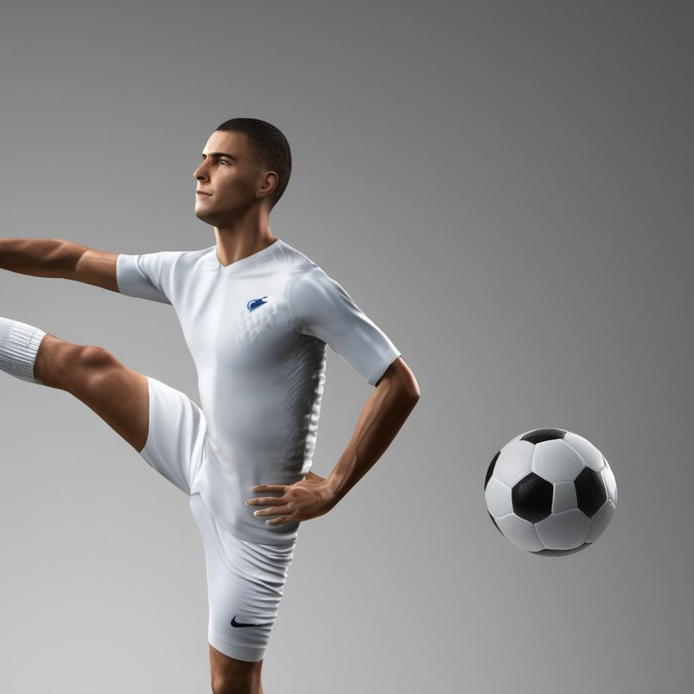
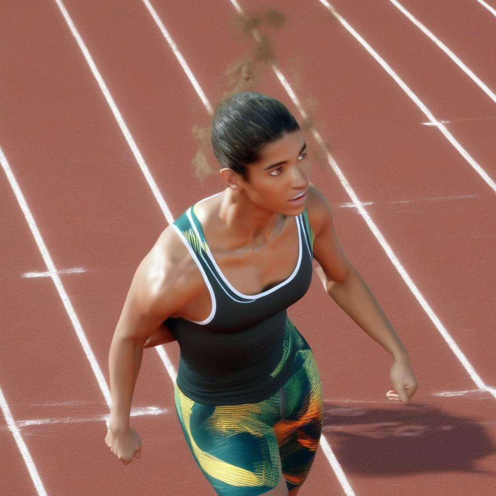

Background
Accurate 3D Human Pose and Shape (HPS) estimation from a single RGB image requires large-scale annotated training data. Collecting real-world 3D annotations is expensive — indoor mocap systems are constrained to lab settings, and CG-rendered datasets suffer from a domain gap with real-world imagery.
Diffusion-HPC (3DV 2024) was our assigned paper. It proposed using Stable Diffusion with text prompts to generate images and then estimating 3D poses as pseudo-labels. The core weakness was that relying solely on text prompts lacked granularity to control body pose, and the resulting pseudo-labels were noisy. Diffusion-HPC proved the concept but left significant room for improvement in label quality and pose control.
Tracing the lineage of Diffusion-HPC, we identified HumanWild (TPAMI 2025) as the most recent open-source paper that directly builds upon and improves it. HumanWild addresses Diffusion-HPC's fundamental label noise problem by starting from ground-truth SMPL-X parameters, rendering surface normal maps, and using a custom-trained ControlNet to generate photo-realistic images conditioned on those normals from the start. Labels are injected upfront rather than estimated retroactively — a direct architectural response to Diffusion-HPC's core weakness.
Experiment Design
We designed targeted experiments to empirically probe two concrete limitations acknowledged in the paper, and one additional failure mode discovered through our own testing.
Hand region label noise — the paper explicitly conjectures that SMPL-X's limited hand mesh resolution introduces label noise in generated annotations. We tested this by pairing hand-prominent normal maps with prompts explicitly requiring precise finger configurations (surgeon, pianist, sign language interpreter), where any failure in finger articulation is immediately obvious.
Extreme pose generalization — HumanWild samples poses from the AMASS mocap dataset, which is biased toward everyday human motion. To stress test the pipeline beyond this distribution, we used surface normal maps of extreme contortionist poses and observed the generator's ability to maintain anatomical coherence. Failures here — such as a completely missing head or inconsistent clothing across limbs — reveal that the ControlNet struggles to faithfully reproduce body structure when the input pose deviates significantly from its training distribution.
Phantom limb hallucination — an unexpected finding discovered through testing. Across two separate experiments — a ballet dancer and a sprinting athlete — the model generated ghost limbs that have no basis in the input normal map. In the ballet output, a duplicate leg appears on the same side as the raised leg. In the sprinter output, a phantom limb materializes at the waist region. This recurring pattern across different normal maps and prompts suggests a systemic failure in limb count consistency, which would directly corrupt body part annotations in generated training data.
Surface normal maps were sourced directly from the HumanWild HuggingFace dataset (clean SMPL-X renders) and from custom extreme pose images processed through NormalBaeDetector. Each normal map was paired with 3 different text prompts to test appearance diversity and pose fidelity simultaneously.
View Inference NotebookStrengths
HumanWild demonstrates strong pose fidelity and appearance diversity on standard poses. The ControlNet conditioning successfully locks body structure while the text prompt drives clothing, identity, scene, and context.
Asymmetric Pose — Correct Laterality
The normal map encodes an asymmetric pose with one arm extended and one leg raised. Despite varying the text prompt (martial arts, ballet, football), the model consistently follows the structural pose from the normal map while generating contextually appropriate appearances.

Limitations
Our experiments revealed three concrete failure modes. The first two were hypothesized based on the paper's own conjectures. The third — generation instability — was an unexpected finding discovered empirically.
Hand Label Noise — Undefined Finger Articulation
SMPL-X has limited hand mesh resolution — finger joints are not accurately represented in the surface normal map. As a result, even when prompts explicitly require precise hand configurations, the generated hands are consistently blobby with no individual finger detail. The paper explicitly conjectures this as a source of label noise.
This is a systemic issue: the generated image cannot show accurate finger positioning because the normal map input contains none. Any downstream HPS regressor trained on this data will inherit degraded hand annotations.
Extreme Pose — Generation Instability
We ran the same extreme contortionist normal map with the same prompt three times. The results were strikingly inconsistent — one output was clean, one had the head completely missing, and one rendered mismatched clothing colors across the person's legs. This stochastic instability on out-of-distribution poses is a significant concern: if the same input produces wildly different outputs, the quality of generated training annotations cannot be guaranteed, and the SAM-based IoU filtering the paper relies on may not catch all corrupted samples.
Phantom Limb Hallucination — Recurring Across Experiments
An unexpected finding discovered through testing: across two separate experiments with different normal maps and prompts, the model generated ghost limbs with no basis in the input. In the ballet output, a duplicate leg appears on the same side as the raised leg. In the sprinter output, a phantom limb materializes at the waist region. This recurring pattern across different inputs suggests a systemic failure in limb count consistency — a problem that would directly corrupt body part annotations in generated training data, and one the paper does not acknowledge.

Summary of Findings
Pose Fidelity ✓
Normal map conditioning reliably locks body pose across varied text prompts, including asymmetric configurations.
Appearance Diversity ✓
Text prompts successfully drive clothing, identity, and scene variation without disrupting pose structure.
Hand Label Noise ✗
SMPL-X's limited finger resolution propagates to all generated images, making precise hand annotations impossible.
Generation Instability ✗
Same input produces inconsistent outputs on extreme poses — missing body parts, mismatched clothing, clean results — all from identical prompts.
Phantom Limb Hallucination ✗
Duplicate or ghost limbs appear across multiple experiments, corrupting body part count in generated annotations.